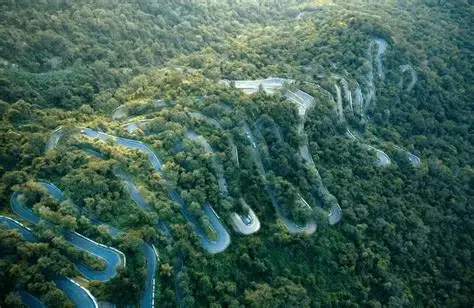
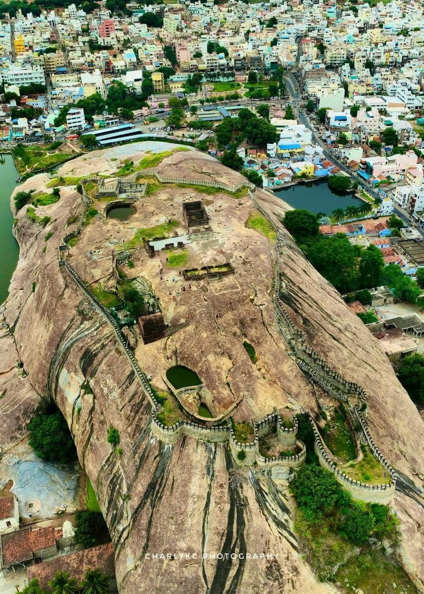
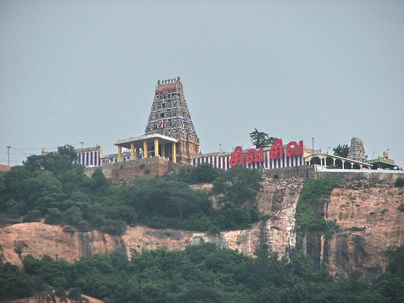
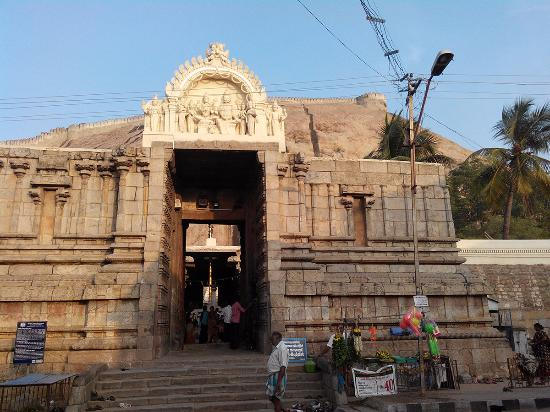

| Famous places | Famous food | Famous temple | Popular name |
| Kolli hills | Kollimalai milagu | Anjaneyar temple | Egg city |
| Jedarpalayam dam | Arisi parupu sadam | Narasimaha temple | Transport city |

Namakkal is ancient, with references dating back to at least the 6th century CE, and its name derives from Namagiri, a distinctive 65‑metre‑high rock formation at its centre
The Narasimha Temple is one of the most important Hindu shrines in Tamil Nadu, drawing pilgrims for its role in devotion to Lord Narasimha.
Namakkal is also associated with V. Ramalingam Pillai, a freedom fighter known for his patriotic songs that inspired national pride.
Namakkal is known as the “Egg City” for its poultry industry and “Transport Town” for its connectivity